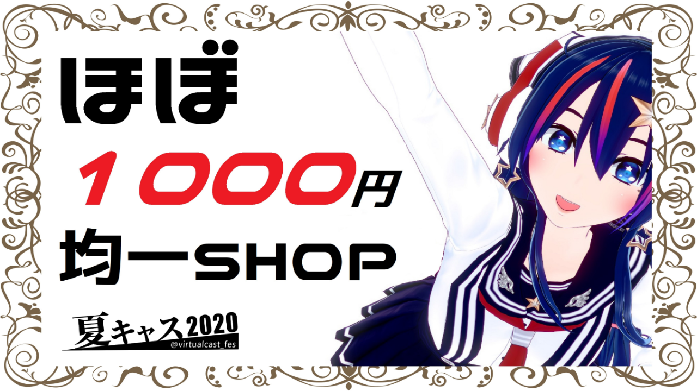
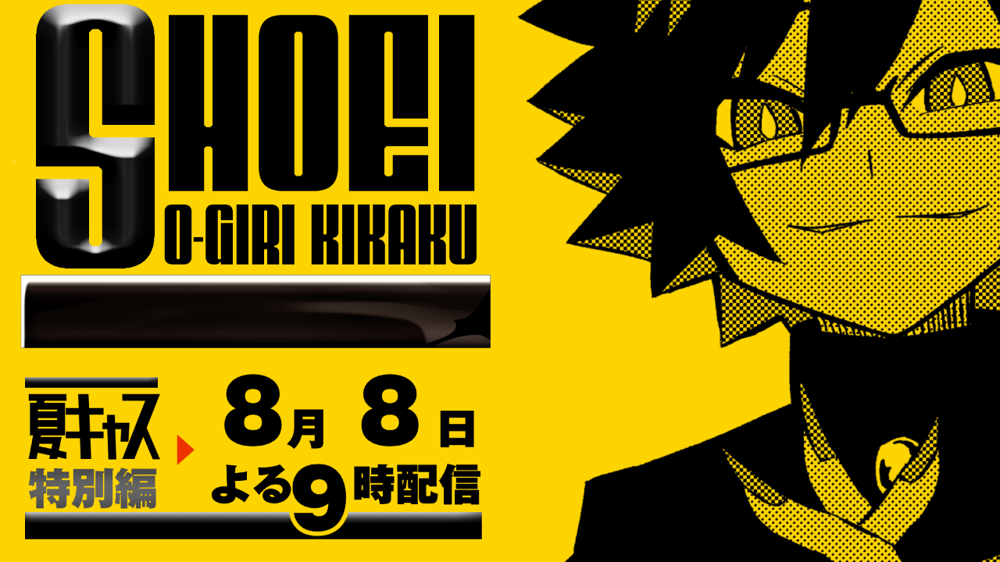
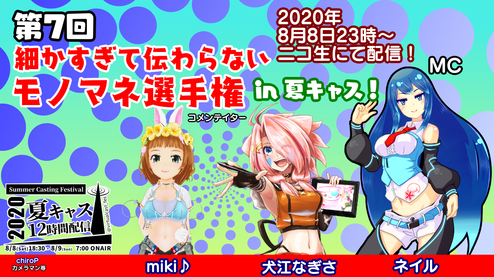
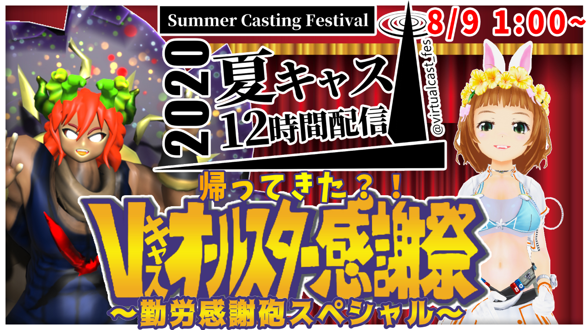
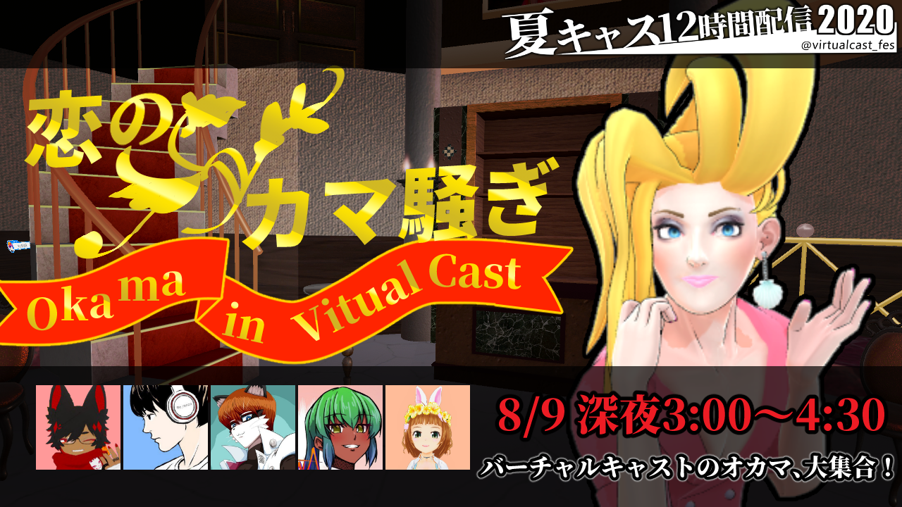
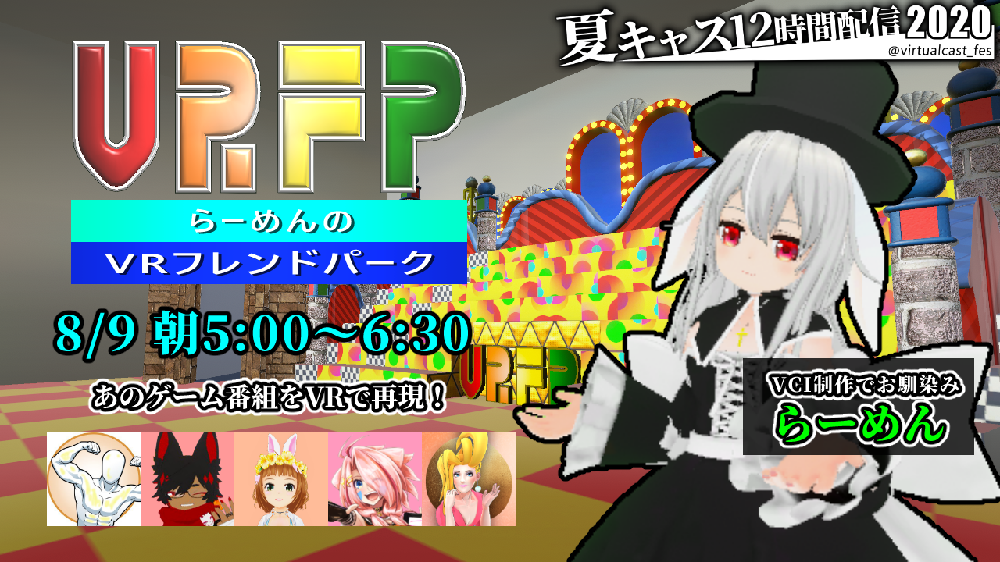
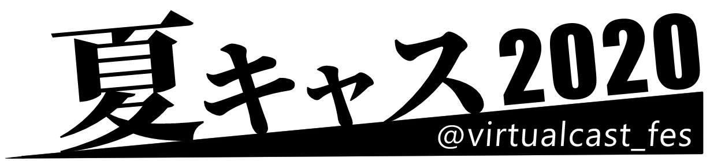

夏キャス12時間配信とは?
バーチャルキャストの人気バラエティ番組が大集合！
新型コロナの流行で、イベントの中止や番組制作を制限される昨今ですが、 こんなときだからこそバーチャルな番組を楽しんでみてはいかが？
※バーチャルキャスト非公式イベントです。
番組表
| サムネイル | 時刻 | 番組名 | 出演 | 概要 |
|---|---|---|---|---|
| 8月8日(土) | ||||
| 18:30 | オープニング | ベッラパスタ・綺里・miki♪ | ||
|  | 19:00 | ほぼ1000円ショップ | 旅姫あどる・犬江なぎさ・しょうえいP・兎紗みみ | 「かわいい顔して恐ろしい値」!? その商品、本当に“1,000円”ですかチャレンジ！！ |
| 20:30 | 裏番組 | ベッラパスタ 他 | ||
|  | 21:00 | しょうえい大喜利 | しょうえいP・犬江なぎさ・miki♪・わさびマヨ提督・ゆいもっぷ・ぼにち・りれんざ | お題にボケて笑いをかっさらえ！ |
| 22:30 | 裏番組 | ベッラパスタ 他 | ||
|  | 23:00 | 細かすぎて伝わらないモノマネ選手権 | chiroP・miki♪・犬江なぎさ・ネイル(MC) | モノマネ凸大募集！ |
| 8月9日(日) | ||||
| 00:30 | 裏番組 | ベッラパスタ 他 | ||
|  | 01:00 | オールスター感謝祭 | miki♪・犬江なぎさ・しょうえいP・銀ゴリ(MC)・黒音紅・片桐 | 答えられたらVキャスマニア！ |
| 02:30 | 裏番組 | 綺里 他 | ||
|  | 03:00 | 恋のカマ騒ぎ | ベッラパスタ・しょうえいP・miki♪・りれんざ・でんでんむし・ANTENA | オカマVキャスター大集合！ こんな時にしか聞けない、深夜の禁断ウラ話がポロリしちゃうかも！？ |
| 04:30 | 裏番組 | 綺里 他 | ||
|  | 05:00 | VRフレンドパーク | らーめん・犬江なぎさ・しょうえいP・miki♪・白い人・ASHU(カメラ) | TBSの某番組のアトラクションを再現！？ 金貨を集めて景品をゲット！ |
| 06:30 | エンディング | ベッラパスタ・綺里・犬江なぎさ・しょうえいP・miki♪ | ||
ロゴ配布
本企画関係の内容であればご自由にお使いいただけます。
